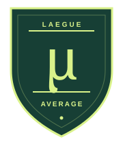

THE LEAGUE’S SHARED OPPONENT
Laegue Average
A shared score. An unlikely following.
The current matchup and a look back at its place in the league.
View season history
FEAR THE MEAN.THIS WEEK
Current matchup
Laegue Average
—Projected final —Loading opponent…
—Projected final —Fetching the current matchup.
Waiting for projections.All 15 real teams contribute to the current score, including the scheduled opponent.
THE RECORD BOOK
Season history
| SEASON | REGULAR SEASON | GAMES | PTS / GAME | OPPONENT PTS / GAME | PLAYOFFS | FINISH |
|---|---|---|---|---|---|---|
| Loading season records… | ||||||
Regular-season scoring
Points per game. Select a season to view its game log below. Current-season figures cover completed games.
GAME BY GAME
Results
| SEASON / WEEK | OPPONENT | AVERAGE | OPPONENT | RESULT | MARGIN | SOURCE |
|---|---|---|---|---|---|---|
| Loading the game log… | ||||||
Scoring and historical coverage
The current score is the sum of all 15 real teams’ points divided by 15. Projected final uses the same calculation with ESPN’s live projected totals. The placeholder is excluded, and the scheduled real opponent is included. The current matchup refreshes every 60 seconds while visible. Missing projections stay unavailable.
Historical records use the scores and outcomes entered for the Average in ESPN at the time. Those posted scores can differ from a mean recalculated from today’s archive. Regular-season and championship-bracket records are shown separately; consolation games are excluded from those records. The final finish is ESPN’s final overall placing, which can reflect consolation results.
The available Average history starts in 2022, when team #12 was ownerless and named “BYE WEEK.” The earlier 2019–2021 team #12 had managers, so its results belong to that real team. The current season includes completed weeks only. Games still awaiting an Average score are left out rather than counted as zero-point losses.